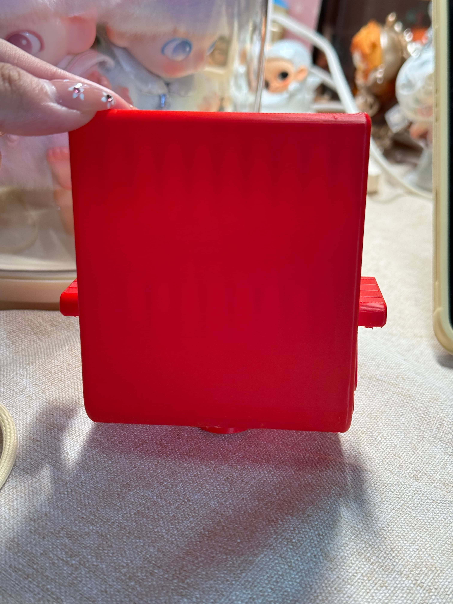
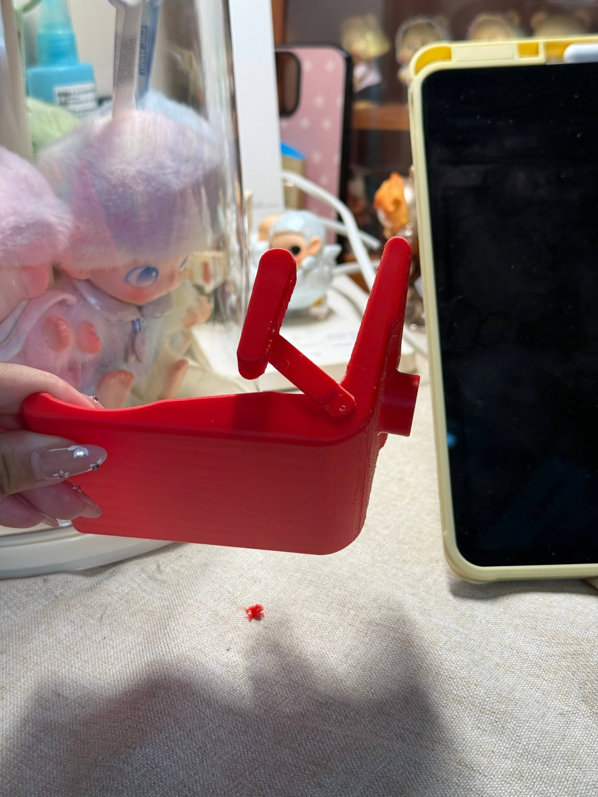
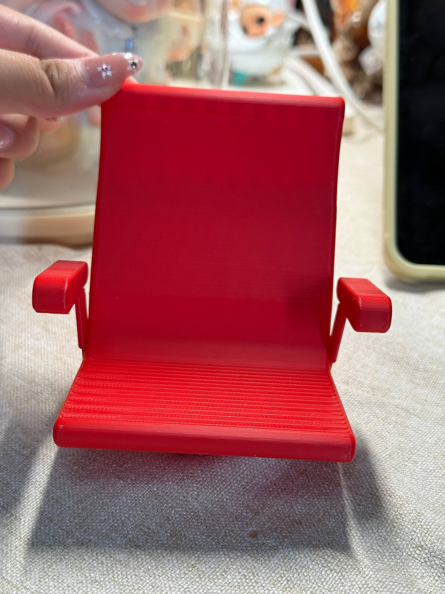
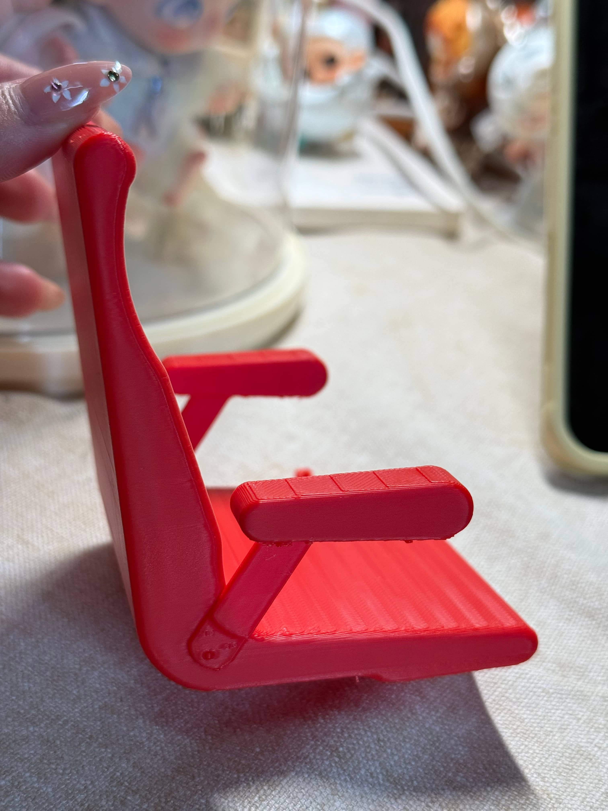

Exercise 5: 3D Printing
I. Research Cases and Applications
Case 1: 3D Emotion Dice - Helping Autistic Children Recognize and Express Emotions
This is a 3D printed toy developed by student teams at Sabancı University in Turkey during the Spring 2025 semester, designed to support emotional cognitive abilities in autistic children. What makes this project special is that the design process involved autism expert and psychologist Begüm Kobanbay as a consultant, ensuring the product truly meets the needs of target users.
Design Background: Student team leader Birsen Beril Bildirici learned about toys developed specifically for special needs children during an international workshop, and was inspired to bring this idea back to implement in the CIP course.
Core Concept: Expert consultant Kobanbay pointed out that for children on the autism spectrum, recognizing and expressing their own and others' emotions often requires special effort. Many studies use two-dimensional visual materials (such as pictures and cards) to assist in this process, but adding three-dimensional objects can transform children from "observers" into "active participants" — this is precisely the design goal of the 3D emotion dice.
Production Method: The dice were 3D printed in Sabancı University's CoSpace (collaborative space) maker space. This tool will be used in various activities conducted with autistic children under the CIP framework.
This case demonstrates that even products with simple structures (like dice), as long as the design logic is correct — transforming abstract "emotion" concepts into tangible, manipulable physical objects — can become effective intervention tools. 3D printing makes this kind of customized production possible.
Source: https://gazetesu.sabanciuniv.edu/en/sabanci-university-civic-involvement-projects-students-designed-toy-children-autism

Case 2: Somatosensory Game Training Kit for Hand Motor Skills
This is a somatosensory game training kit designed for hand motor skills training in autistic children, consisting of gloves and wristbands. The wristband screen displays device status and records vital signs data such as heart rate and blood oxygen levels during gameplay. Autistic children achieve grasping and rotation in virtual scenes through somatosensory gloves. When worn, there is actual hand load sensation, enabling precise capture of children's hand movements during gameplay. The gloves have multiple somatosensory feedback vibration points to provide realistic virtual tactile experiences, especially with fingertip tactile feedback components in sensitive fingertip areas, giving children a good immersive gaming experience.
In terms of appearance design, bionic design was adopted, imitating the form, color, and imagery of rose buds. The somatosensory glove is the medium for somatosensory game interaction, containing bend sensors that can monitor finger bending degrees. The gloves can precisely capture children's hand movements during gameplay and evaluate training effectiveness based on movement stability and accuracy.
Source: https://mbd.baidu.com/newspage/data/dtlandingsuper?nid=dt_4681713730090665528&sourceFrom=search_a

II. Testing 3D Printing
Test Piece 1:


Note: Due to lack of detailed photos from previous tests, these photos are supplementary shots (blue chair represents test software).


Test Conclusions:
(All angles tested during the testing phase were acceptable)
- In the 20° to 50° test angle range, the material's deformation state and texture state both performed well, with no obvious deformation, sagging, or curling. Edges were neat and layer lines were clear, indicating this angle range is a stable working zone.
- When the angle reached 55°, extremely slight deformation (micro warping) and texture flaws began to appear, but overall it remained relatively intact.
- When the angle increased to 60° and above, deformation intensified significantly compared to before (curling, warping), and texture state deteriorated (layer line breaks, rough surface, chaotic texture). Especially at 70°, there was noticeable curling and rough texture compared to before, but the material did not exceed its tolerance limit and could still print normally.
Test Piece 2:


Conclusion:
- When overhang angles are in the 20° to 40° range, the material shows no deformation and layer lines are clear and smooth, making this the optimal forming range.
- At 50°, extremely slight sagging appears (almost invisible), but texture remains good, which can serve as the critical upper usage limit.
- Starting from 60°, middle sagging becomes obvious and texture begins to roughen.
- From 70° to 80°, sagging continues to worsen and texture deteriorates significantly.
Therefore, to ensure printing or forming quality, it is recommended to control overhang angles within 40°. If very slight sagging is acceptable, you can try not exceeding 50°. When exceeding 60°, supports should be added or the design adjusted.
III. 3D Printing Download File (Chair)
Basic Information:

Material: PLA basic
1. Initial Print Attempt (Error Occurred)
Reason: No supports were added, resulting in floating areas


2. Re-adjustment (Added Tree Supports)

3. Printing

4. Removing Tree Supports


Tool: Wire cutters
Summary:
Our group's own parts were finally successfully 3D printed!
Work Display:






IV. Personal 3D Printing Test
Images are located in the Jowywiz folder.